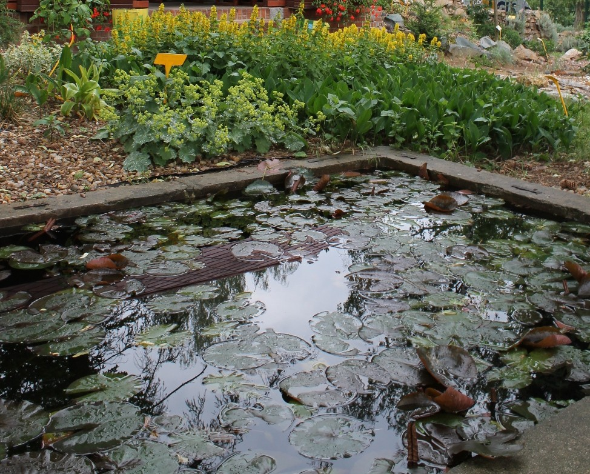

calm · 初始评价标签
全部标签均为 agent 初选的 provisional 标签。未经过真人试听或审核，不是 ground truth。此目录、答案页和来源描述不得输入推荐器。
盲版 · 完整标注 CSV
 img_0006 · Source / 来源
img_0006 · Source / 来源acceptable_match · 2/3
睡莲与水面温和，花色较活泼，仍是可接受封面。
provisional · agent_visual_inspection + audio_author_description/source_tags; no human listening img_0026 · Source / 来源
img_0026 · Source / 来源hard_distractor · 0/3
同样是树林和水体，急流运动与峡谷压迫感不平静。
provisional · agent_visual_inspection + audio_author_description/source_tags; no human listening img_0027 · Source / 来源
img_0027 · Source / 来源mismatch · 0/3
雷暴带来突发张力，难与柔和电钢琴一致。
provisional · agent_visual_inspection + audio_author_description/source_tags; no human listening img_0013 · Source / 来源
img_0013 · Source / 来源strong_match · 3/3
雪山溪谷与树木构成安静远景，没有可见急速活动。
provisional · agent_visual_inspection + audio_author_description/source_tags; no human listening img_0005 · Source / 来源
img_0005 · Source / 来源acceptable_match · 2/3
蝴蝶短暂停驻，画面可用于柔和音乐，但比静水更有生命活动。
provisional · agent_visual_inspection + audio_author_description/source_tags; no human listening img_0002 · Source / 来源
img_0002 · Source / 来源acceptable_match · 2/3
花朵近景活动弱且自然，但颜色与细节较活泼。
provisional · agent_visual_inspection + audio_author_description/source_tags; no human listening img_0015 · Source / 来源
img_0015 · Source / 来源strong_match · 3/3
山体与林木映入平静湖水，水平结构稳定。
provisional · agent_visual_inspection + audio_author_description/source_tags; no human listening img_0039 · Source / 来源
img_0039 · Source / 来源hard_distractor · 0/3
云、山与自然远景相似，巨大的喷发柱却带来危险和强烈活动。
provisional · agent_visual_inspection + audio_author_description/source_tags; no human listening img_0019 · Source / 来源
img_0019 · Source / 来源acceptable_match · 2/3
湿凳与落叶的安静细节可作低能量封面，略带失落使其弱于纯静谧画面。
provisional · agent_visual_inspection + audio_author_description/source_tags; no human listening img_0040 · Source / 来源
img_0040 · Source / 来源mismatch · 0/3
夜间喷发的紧张感明显不适合平静代表曲。
provisional · agent_visual_inspection + audio_author_description/source_tags; no human listening
img_0014 · Source / 来源strong_match · 3/3
庭院小水池与植物，封闭而温和的日常空间。
provisional · agent_visual_inspection + audio_author_description/source_tags; no human listening img_0031 · Source / 来源
img_0031 · Source / 来源hard_distractor · 1/3
同为有高光的水面，飞溅水珠与撞击构图区别于平整湖面。
provisional · agent_visual_inspection + audio_author_description/source_tags; no human listening img_0011 · Source / 来源
img_0011 · Source / 来源strong_match · 3/3
海边峭壁与小石滩，画面稳定、没有强烈浪花或拥挤活动。
provisional · agent_visual_inspection + audio_author_description/source_tags; no human listening img_0010 · Source / 来源
img_0010 · Source / 来源strong_match · 3/3
无人林间小径，重复树枝与柔和阴影产生安静节奏。
provisional · agent_visual_inspection + audio_author_description/source_tags; no human listening img_0025 · Source / 来源
img_0025 · Source / 来源hard_distractor · 0/3
海水和岸边物体与安静海岸表面相似，但浪撞栈道的活动强度很高。
provisional · agent_visual_inspection + audio_author_description/source_tags; no human listening img_0037 · Source / 来源
img_0037 · Source / 来源strong_match · 3/3
蓝天下舒展的裸枝，简洁线条与大量留白；在舒缓代表曲下优先理解为静谧。
provisional · agent_visual_inspection + audio_author_description/source_tags; no human listening img_0034 · Source / 来源
img_0034 · Source / 来源strong_match · 3/3
俯拍两杯茶，简单生活物件与固定构图适合低能量音色。
provisional · agent_visual_inspection + audio_author_description/source_tags; no human listening img_0009 · Source / 来源
img_0009 · Source / 来源strong_match · 3/3
湖面平整且形成倒影，低动作强度与宽阔留白适合平静音乐。
provisional · agent_visual_inspection + audio_author_description/source_tags; no human listening img_0030 · Source / 来源
img_0030 · Source / 来源mismatch · 0/3
白水运动的急迫动作与低能量目标相反。
provisional · agent_visual_inspection + audio_author_description/source_tags; no human listening img_0029 · Source / 来源
img_0029 · Source / 来源mismatch · 0/3
攀登活动和陡峭雪脊强调体力与风险。
provisional · agent_visual_inspection + audio_author_description/source_tags; no human listening